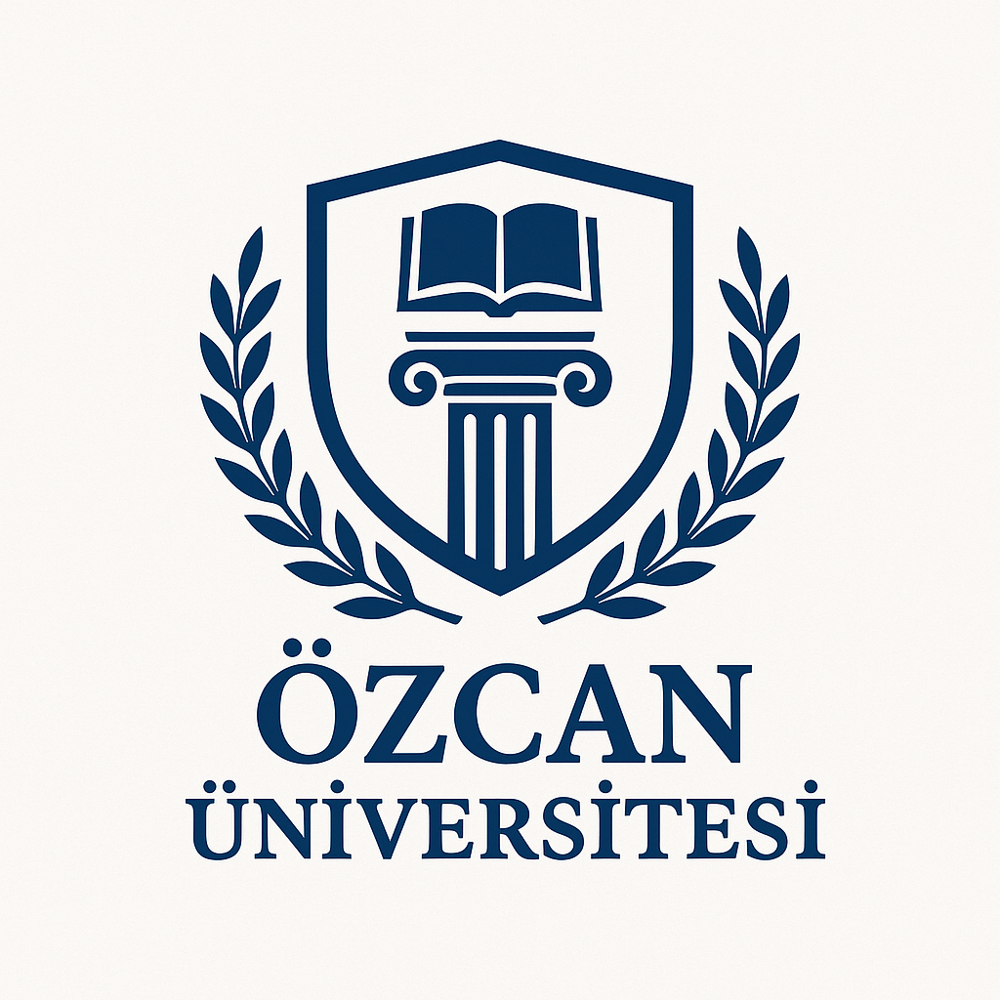

Özcan Üniversitesi
Tıp, eczacılık ve sağlık alanlarında yenilikçi araştırmalar.
Yenilikçi teknolojiler ve mühendislik çözümleri.
Toplum ve insan odaklı araştırmalar.
Çevre koruma ve sürdürülebilir kalkınma araştırmaları.